来源：https://zv0h2ktoy4h.feishu.cn/docx/RiuddMx03o2GJSxylBgcGfVXnXb
各位生财圈友，大家好！我是绍芸。加入生财9个月了，看到了许多优秀圈友们写的文章，对自己帮助很大。所以我想，自己也要拿出干货来回馈大家，希望我的分享能对圈友们有帮助。我今天分享的主题是：如何自己DIY（不用中介）申请世界名校，以及我在申请过程中踩过的坑。
先说申请结果：我家孩子最终上了世界排名top10的英国大学读研究生。
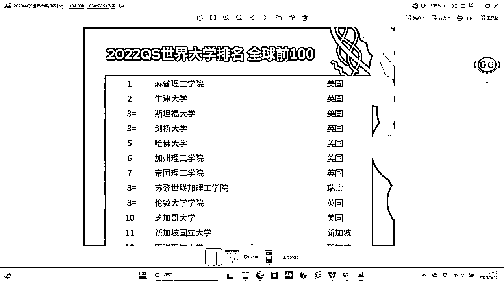
在我申请成功以后，消息迅速传遍全单位和朋友圈儿，以后不停的有朋友及同事来向我咨询如何做留学申请。这两年，在我的指导和帮助下，已有多名孩子成功申请到了美国、英国等排名前30的学校，其中也包括部分美国藤校。
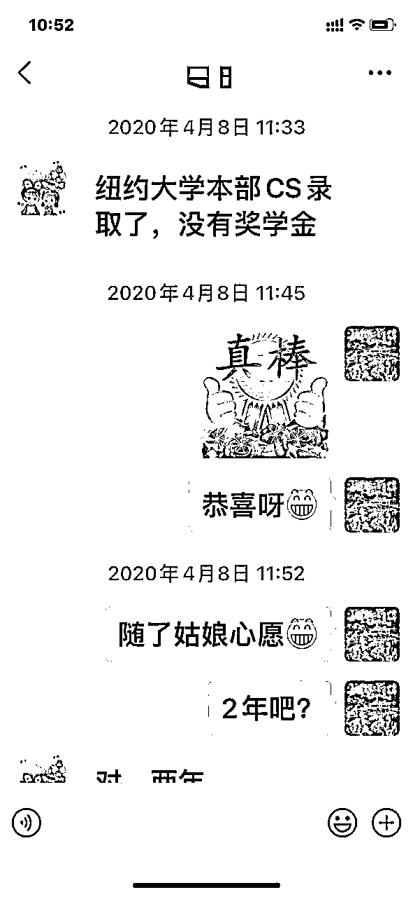
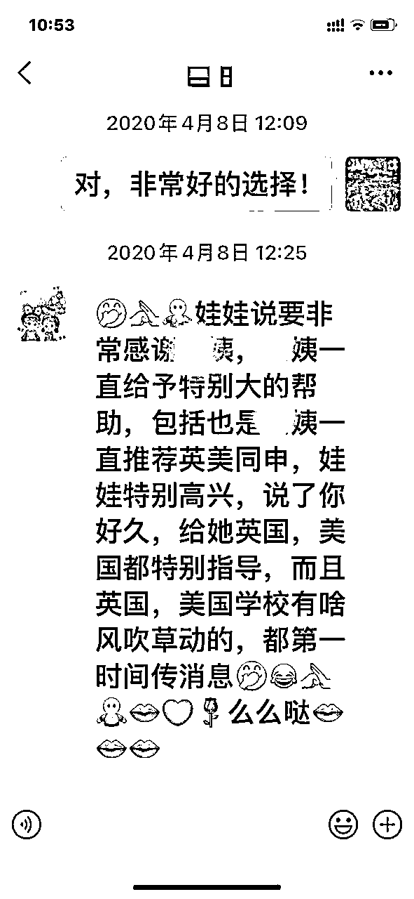
下面我就给大家分享下我的申请故事。
一、我为什么要自己申请？
其实最开始我也是通过中介申请的，我在网上查看了许多家中介的评价，包括很有名的和没名的，最终找到了一家评价最好的中介。
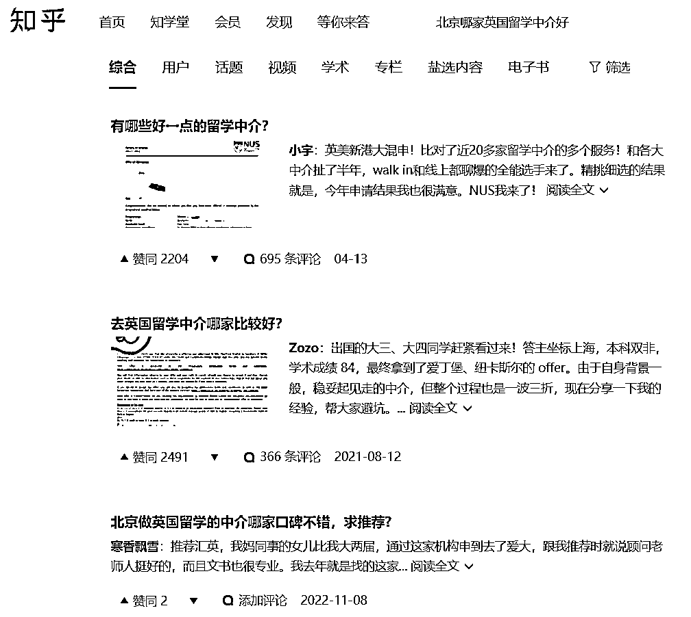
这里就要提到第一个坑。避坑1、事后证明，网上的“好评”多是不可信的，好多是中介自己“做”出来的，骗你上钩的。
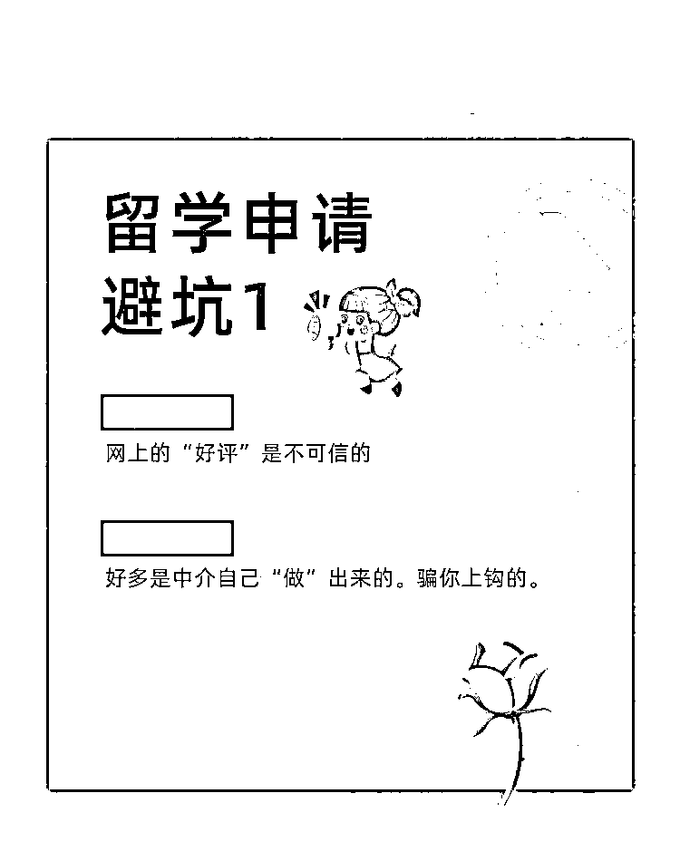
对应的建议是：找中介，最好是找朋友用过的，孩子申请结果满意的，最好还能超出预期的。
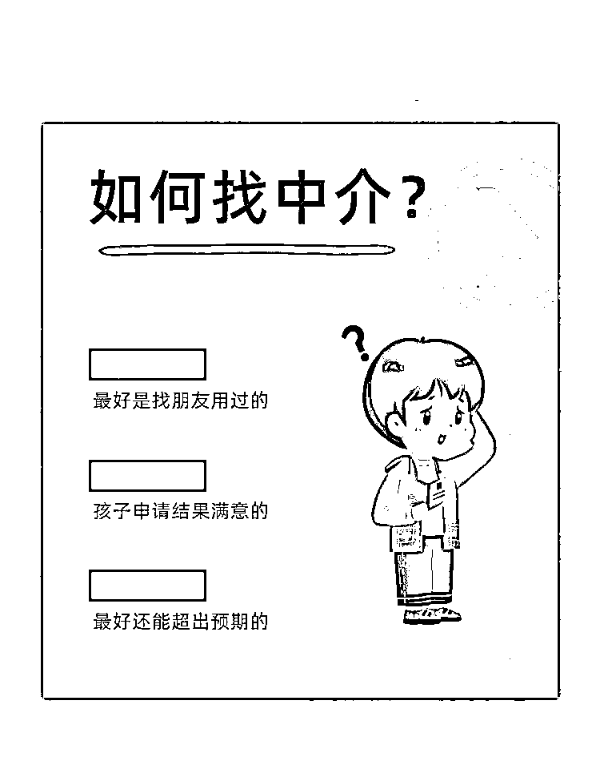
比如：孩子的硬件条件（指学业成绩GPA和语言成绩）本来只够申请前50学校的，但最终的申请结果孩子进了上一档的学校，比如前10，我家孩子就是这种情况。按照中介的说法，我家孩子的成绩是绝不可能申请到英国第一档学校的（没交钱的时候可不是这么说的），但最终的结果是，我自己DIY申请到了年年世界排名前10的学校。
二、找到中介以后的故事……
（一）在我没交中介费之前，中介说，只要您孩子成绩够英国最好学校的基本线（均分85以上，雅思至少6.5以上），申请英国第一档大学还是很有希望的，并给孩子推荐上一些课程，课程是免费的，但是很耗时间，因为有考试，以弥补专业知识的不足。但交完钱真正到了申请季的时候，中介却说，您家孩子的成绩只够门槛分，由于今年是史上最难申请季，竞争太激烈，所以门槛成绩肯定是申请不到英国第一档学校的。是不是很悲催？
最关键的是，在我一再要求要试一试的情况下，中介说时间上来不及了。他们已经没有人手再接新活了（因为我要增加心仪学校的专业，之前申请的那个专业太热门了，估计没戏）。中介说，他们一个老师要负责200个孩子。 Oh my God！一个老师负责这么多孩子，能有精力把事情做深做细吗？就这样，我不得不临危受命，逼自己亲自上阵为孩子争取最心仪的学校。
我的英语水平，大学英语四级。放了几十年没用了，也只能赶鸭子上架了。发现没有？人在被逼急的时候，潜能是无限的！
避坑2、不要相信中介在你交钱之前的任何承诺。
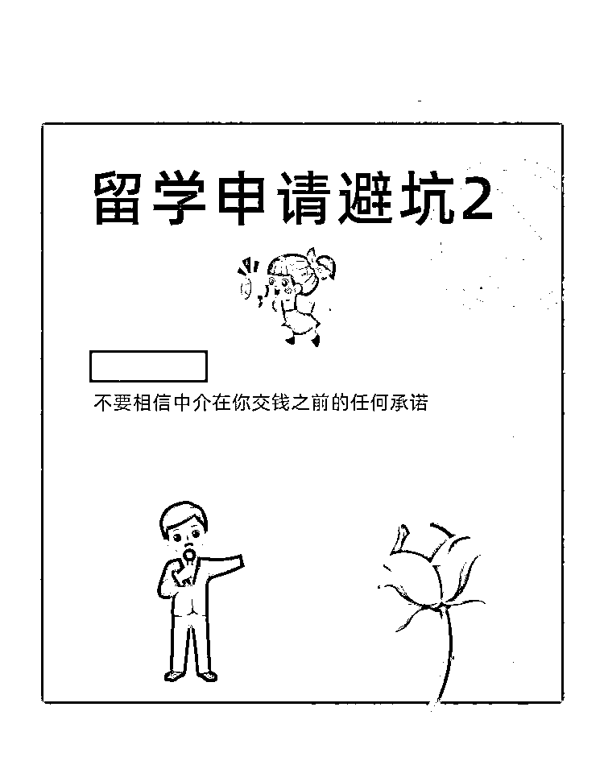
避坑3、事后证明，中介推荐的课程毫无用处，对申请一点帮助也没有，白白浪费那么长时间学习。
对应的建议：一定要亲自到心仪学校的官网上看，想报的专业到底需要哪些专业知识背景以及社会实践活动？做到有的放矢地进行准备。
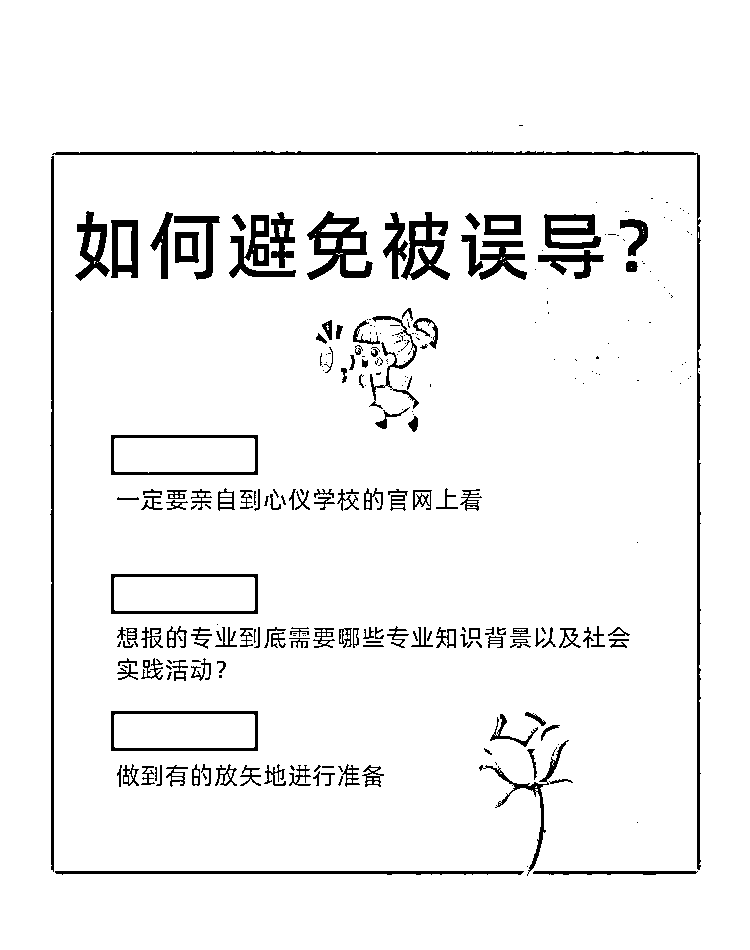
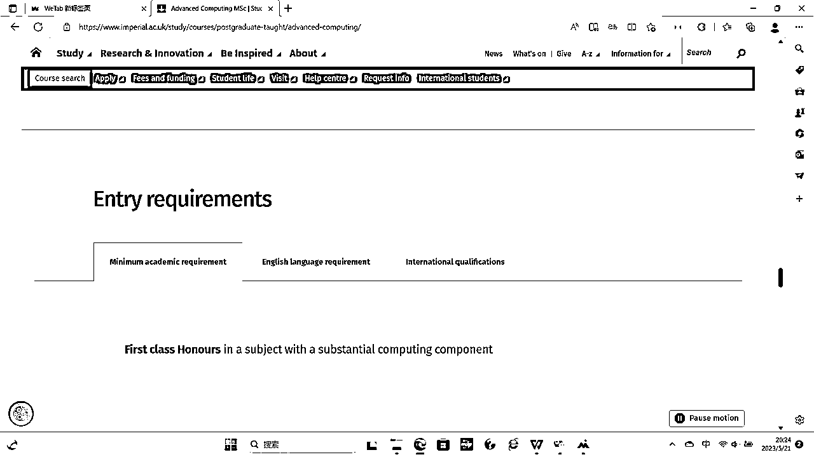
（二）文书
看到中介交来的文书，简直太让我失望了！内容平淡不说，模板化严重，根本看不出任何个人、专业和学校特色。试想，在那么多优秀的申请人中，录取老师看到这样的文书为什么会选中咱家孩子呢？
于是，我决定推倒重来，我自己重新写！中介的一点利用价值都没有。钱也不能退，因为中介给你写了，你不满意它可以改。但我对它不再抱有希望。
建议3、文书最好是自己写，哪怕是中文的，然后再找人翻译。最重要的，文书要结合学校的招生要求来写，写出自己的特色，要写到招生官（通常是系主任）心里去。
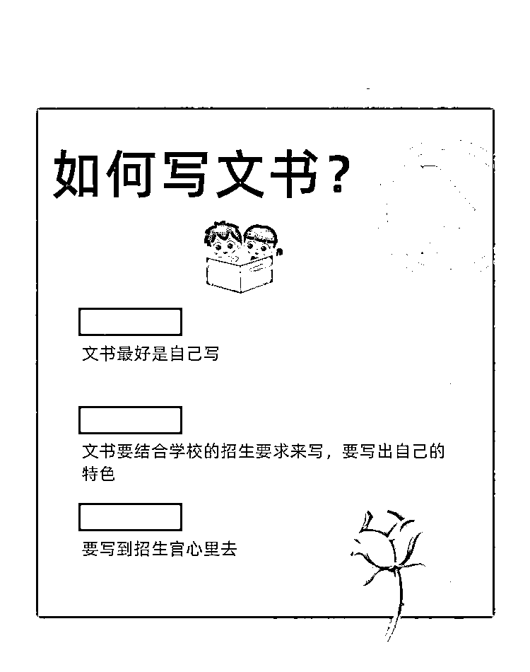
只有自己对自己最了解。文书只需要写对申请有帮助的内容，比如你掌握哪些专业所需要的知识，参加过哪些实习活动等，要做到有的放矢，要充分挖掘和扩大自己的亮点，而这是中介怎么也做不到的，因为它不深入了解你。与申请专业无关的内容，哪怕你再优秀，也不要去写，因为不需要，只会让招生老师感到烦。想想他每天要面对那么多的申请材料，你说一堆他不关心的，他能不把你的材料放到一边去吗？你要做到言简意赅，抓住重点，让他一眼就能把你从一堆人中pick出来。
分享一个小技巧：在写文书的时候，可以参考不同学校对同一专业（专业名称也许不一样，但教学内容差不多）的描述，可以使我们的文书用词更专业地道，内容有深度，同时与众不同。
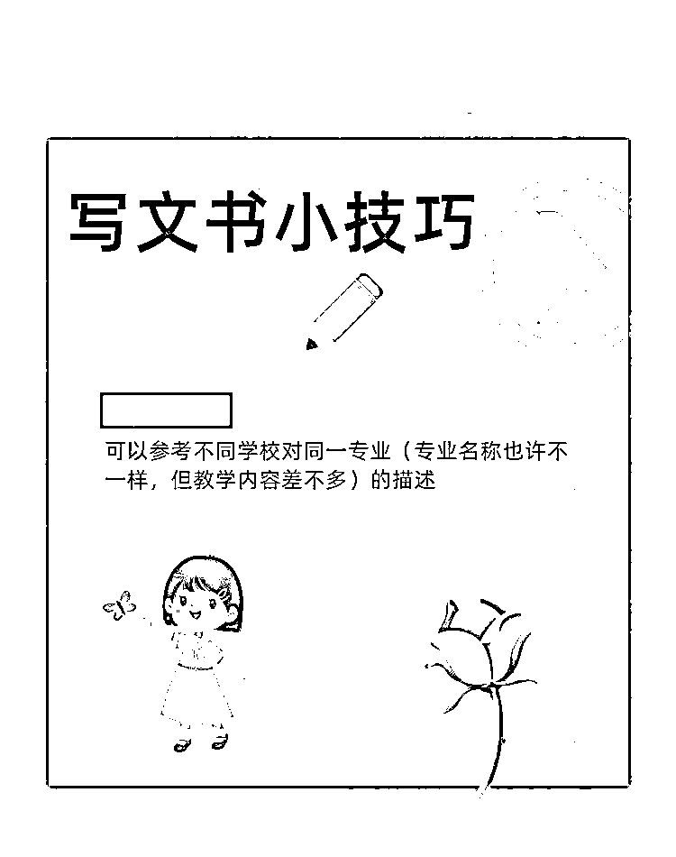
（三）学校和专业的选择
说到这里，我还能回忆起当时的愤怒！中介在为孩子定学校和专业的时候，居然都没有到学校官网上去看最新的招生要求，仅凭以往经验去定校定专业，这实在太坑了！招生要求每年都有可能变化。也就是说，你去年还可以申请这个专业， 但今年你可能就不符合招生条件了，如果申请了那不直接悲剧吗？几千元的申请费就打水漂了。申请费是交给学校的，不包含在中介费里。我家孩子就遇到了这种情况。
避坑4、自己一定要到官网上去核实招生信息，明确招生要求，不能完全交给中介就什么都不管了。
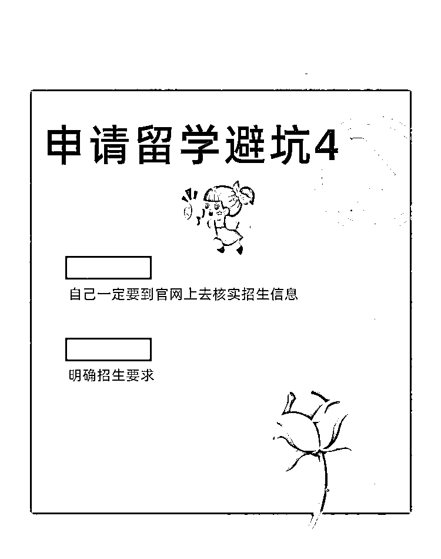
我的成功大招！最核心秘籍：巧妙利用往年申请数据提升胜率！
俗话讲，知己知彼，才能提高胜率。前面说过，我家孩子的硬条件（成绩）是刚够门槛，面对那么多优秀的竞争者，怎样才能脱颖而出，增加录取胜率呢？那就必须得了解往年录取情况！于是，我给每个申请学校写信，要来了前三年的申请数据，包括每年的申请人数，其中中国学生申请人数，录取人数，其中中国学生的录取人数，最终录取率，还有实际入学人数。因为有的学生最终会选择去别的学校读书，不来读这个专业，于是往年出现这种情况多的专业在招生的时候就会比招生计划多出一些名额。另外，不要被专业名称所误导，一定要看清楚该专业学习的内容到底是什么？是否是自己想学的专业。我就是为孩子选择了这样的专业，成功被录取。
（四）网上申请
这个很简单，一步一步按照官网的提示往下填，填好，资料上传好，提交就行了。网上很容易找到网申攻略。但就是这么简单的一件事，中介居然也搞出了问题！
我发现中介居然把我孩子的学校名字填错了，气不气人？耽误不耽误事儿！英国好大学是有本科学校名单list的，如果你本科学校不在名单里就根本不可能录取你。这也是我后面完全不用中介，自己网上提交申请资料的原因。
避坑5、网申信息也要亲自上学校官网核实，避免中介填错。
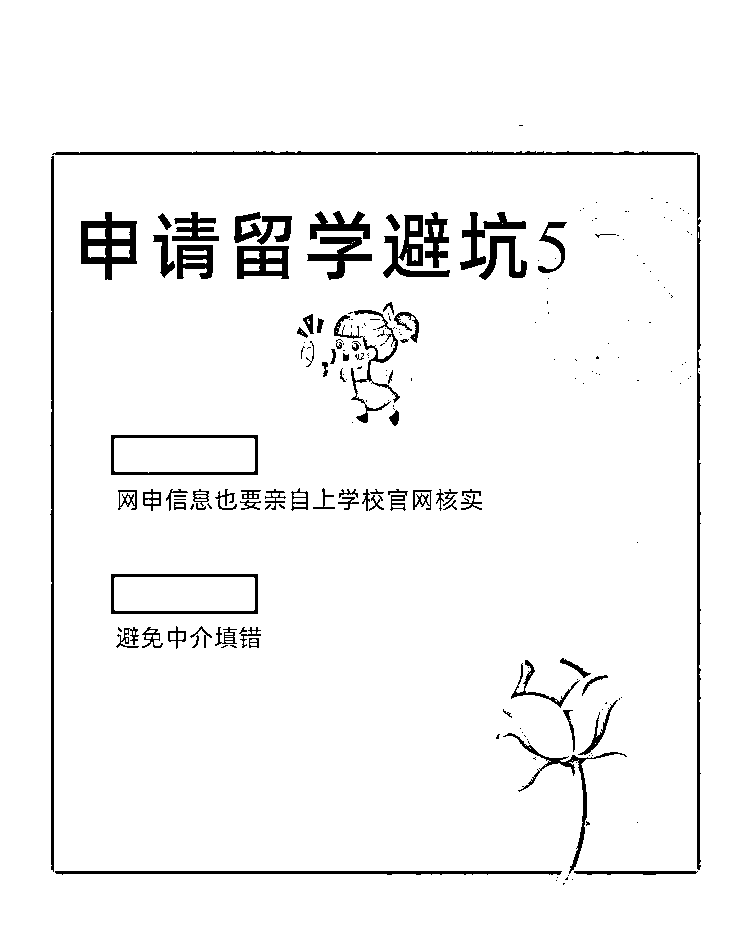
我的分享到此结束！如果能对大家有所帮助我会非常开心！
如果大家认可我，也欢迎找我咨询英国留学申请问题，微信号shaoyun181818，我也可以帮忙撰写文书（适当收费）。我一定会像对待自己的孩子一样，对待您孩子的申请。因为我知道，每一位孩子在家长心中都是最重要的。我值得您信赖！（完）